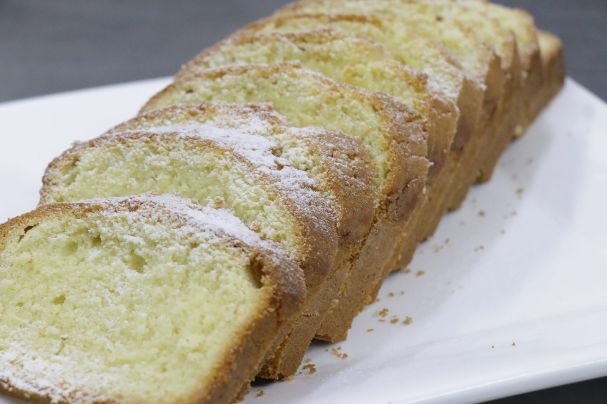
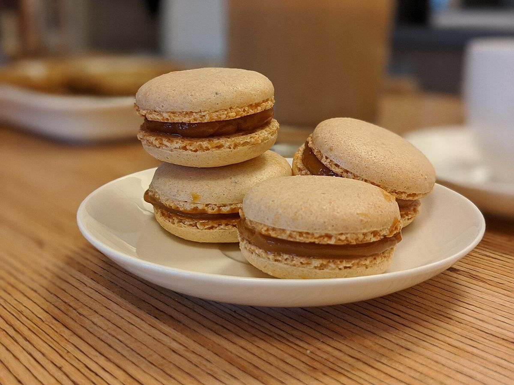

ABOUT
パティシエひとりの、小さな洋菓子店
Instagramのプロフィールには「パティシエひとりの小さな洋菓子店」と紹介されています。ケーキづくりは店主がひとりで担い、Instagramの更新は接客を担当する奥さまが行っている、と書かれていました(出典: 公式Instagram、2026年11月確認)。
食べログには、ホールケーキは1週間以上前の予約が必要であること、テイクアウトに対応していること、駐車場があること、PayPayなどのQR決済が使えることが載っています。営業は10時から、売り切れ次第終了とされています。
店名の意味やお店の由来は、確認できた情報がありません。ここから先は制作側のイメージです。「ラトリエ」はフランス語で工房、「クレール」は明るい・澄んだという意味の言葉。白を基調にした店内という口コミも参考に、このサイトはやわらかな白とベリーの赤を基調にしました。お店が語った理念ではありません。

MENU
ご用意のお菓子
食べログの記載では、プリン、ホールケーキ、ロールケーキ、マカロン、モンブランなどが挙げられています。ホールケーキは予約制です。日々の品ぞろえ・価格・焼き菓子の詳細は準備中です。




写真はフリー素材のイメージです。お店の実際の商品ではありません。
VOICE
口コミ(イメージ例)
以下は制作側が作成したイメージ例で、実在のお客様の声ではありません。
小さなお店ですが、ショーケースのケーキがどれもきれいで迷いました。スポンジとクリームのなじみがやさしかったです。
お祝いのホールケーキを予約しました。受け取りもスムーズで、家族みんなで楽しめました。
駐車場があって立ち寄りやすく、プリンをお土産に買って帰りました。また寄りたいです。
ACCESS
お店のご案内
| 店名 | ラトリエ クレール(L'atelier CLAIR) |
|---|---|
| 所在地 | 〒015-0041 秋田県由利本荘市薬師堂堂ノ下101-3 |
| 最寄り | 薬師堂駅から徒歩3分(食べログの記載) |
| 電話 | 準備中 |
| 営業時間 | 準備中 |
| 定休日 | 準備中 |
| SNS | Instagram @latelier_clair |



写真はフリー素材のイメージです。お店の写真・実際の商品を示すものではありません。